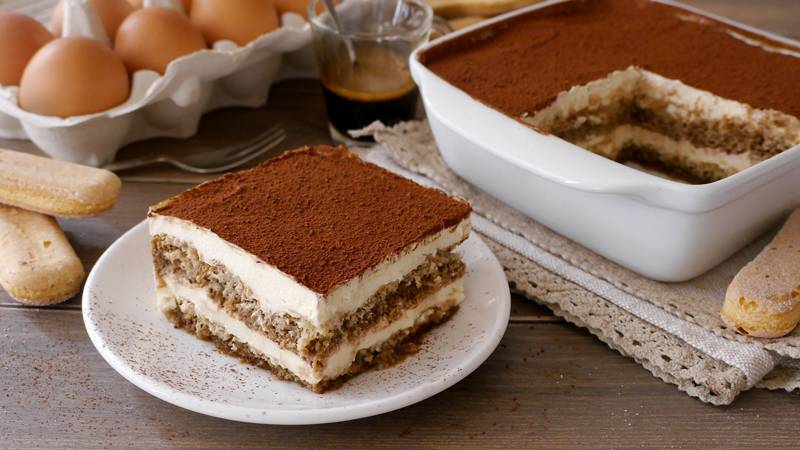

No dinner is perfect without a dessert and Tiramisù is the king of italian desserts
The most well known italian dessert in the world. Tons of variants from all over the globe, you can never get tired of this dessert
We will follow the original recipe, but you should definitely try the variants once you're confident!
Ingredients:
- Savoiardi biscuits 300g
- Mascarpone cheese 500g
- Coffee 300g, sugar to taste
- Eggs 4
- Sugar 100g
- Cocoa powder enough to cover the surface
Instructions:
- Separate the whites from the yolks. Be careful that there's no yolk in the whites or it'll prevent the whipping later on
- Whip the yolks with an electric whisk while pouring half of the amount of sugar.
- Once the mixture becomes clearer and foamy, add the mascarpone, small bits at a time
- Once you've added all the cheese, you should have a thick and compact cream. Set it aside
- Clean the whisk very well and start whipping the whites while pouring the remaining sugar, small amount at a time
- Once the mixture is really thick and compact, you're done whipping the whites. You'll get this consistency once you can turn the bowl upside down and the mixture remains firm without falling
- Add a spoonful of the whites mixture to the yolk mixture and whisk energically.
- Add the rest of the white mixture to the yolk and stir carefully from the bottom to the top
- Once ready, pour a generous spoonful of cream on the bottom of a 30x20cm baking dish. Make sure to distribute the cream evenly
- Briefly soak the Savoiardi in the coffee and distribute them evenly on the cream
- Repeat the last two steps until you reach the top of the baking dish. The last layer should be cream.
- Make sure the cream is evenly spread in the baking dish, then dust the top with the cocoa powder
- Let it sit in the fridge for a couple of hours and you're done! Tiramisù is ready!
Storage:
You can store the tiramisù in the fridge for a couple of days max. Make sure it's well covered.
You could also freeze it. It can stay up to 2 weeks inside the freezer.